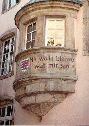
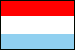

CHAPTER ONE
CHAPTER ONE 

Nestled in the heart of western Europe lies a small country, just 999 square miles, smaller even than the state of Rhode Island, called Luxembourg. Despite its small size, Luxembourg has a rich and distinct history, marked by an independent spirit, resilience during long periods of foreign rule and a tenacity to maintain their unique culture, best summed up by the nations' motto "Mir wölle bleiwe wat mir sin" or "We want to remain what we are."
 HISTORY
HISTORY 
During the first century, as the Romans conquered northward, a fort was established at what is now Luxembourg City. Nearly a thousand years later, in 963 AD, Count Siegfried of Ardennes built a castle on the remains of the Roman site called Lucilinburhuc, or "small fortress" after purchasing the land from the Abbey of St. Maximin in Trier. [1] Siegfried, who founded the house of Luxembourg, is also a central character in the thirteenth century Teutonic epic poem Nibelungenlied and Richard Wagner's Ring opera quartet. For Luxembourgers, the year 963 marked the country's emergence as a distinct entity and is considered the founding of their nation. Because of its strategic location, Lucilinburhuc, which eventually became known as Luxembourg, emerged as an impenetrable fortress called "Gibraltar of the North."
After the extinction of the male line of Siegfried, the country passed through a variety of hands including Dutch, German and French until Henry VII of Luxembourg became the Holy Roman Emperor in 1308. Under Henry and his descendants the country was raised to a Duchy and its borders enlarged. Once again though the country endured "a confusing succession of rulers" eventually passing to Philip the Good, Duke of Burgundy, in 1443. In 1477, along with other Burgundian holdings, the Duchy was absorbed into the Hapspurg Empire, and Luxembourg because of its central location, often "experienced the ravages of war."

The Duchy eventually passed through the hands of France, Spain and Austria before Revolutionary French armies laid siege to Luxembourg City in 1794. After the city fell in 1795, the Duchy was annexed to France as the Département des Forêts, or "Forest Department", and "still a chattel, it would be claimed by another power, conquered, renamed and redefined." Revolutionary France, anxious to throw off the oppression of church and king, adopted descriptive names, such as the Forest Department, to reflect reason, science and nature, rather than using established historical names. To add to the confusion of French rule, from 1795 until 1806, Luxembourg was also forced to adopt the Republican or Revolutionary calendar - devoid of religious and mythological connotations - introduced to replace the Gregorian calendar.
During the French Revolution a reformed calendar rid of religious connections was in fact adopted having a 10-day week and 12 months of 30 days. The days left at year's end were given over to vacations and celebrations. The calendar began on Sept. 22, 1792, the day the republic was proclaimed. The months were called Vendémiaire (vintage), Brumaire (mist), Frimaire (frost), Nivôse (snow), Pluviôse (rain), Ventôse (wind), Germinal (sprouting time), Floréal (blossom), Prairial (meadow), Messidor (harvest), Thermidor (heat), and Fructidor (fruit). France returned to the Gregorian calendar on Jan. 1, 1806, under Napoléon I. [2]
French rule continued, under Napoléon until 1814. In 1815, at the Congress of Vienna, the Duchy became an independent Grand Duchy, but was given to William I, King of the Netherlands, of the House of Orange. Much of the land gains that had been made over the centuries were now ceded to France and Prussia. In 1839, following Belgium's independence from the Netherlands, Luxembourg too became self-governing. At this time much of the western portion of Luxembourg was given over to Belgium and the region became the Belgian province that is eponymous for its previous allegiance, Luxembourg. The Belgian city of Arlon and the German city of Trier were both once within Luxembourg's boundaries.

After its independence, Luxembourg was still part of the larger German Confederation, a loose grouping of German states created by the Congress of Vienna in 1815 to replace the Holy Roman Empire. In 1866, the Confederation was rendered largely ineffective by rivalry between Austria and Prussia, and the Treaty of London dissolved it in 1867. In addition to genuine independence, the treaty also stipulated perpetual neutrality for Luxembourg. The treaty also led to the dismantling of the fortress synonymous with Luxembourg for nearly a thousand years. Fortunately, evidence of the former fortress still remains, particularly the Casemates, a network of underground tunnels connecting various points of the fortress, and the Bock, a natural rock lookout overlooking the Alzette River valley.
Because of its neutrality, Luxembourg has no right to defend herself and this made the country particularly vulnerable to its larger and more powerful neighbor, Germany, during both World Wars. Today the Armed Forces consists of just over 600 men, serving primarily ceremonial and peacekeeping purposes. "When a chief of state visits Luxembourg, two soldiers stand guard." [3] This fact alone illustrates "no truer measure of the smallness of the Grand Duchy of Luxembourg." [3]
Today Luxembourg is an independent state and constitutional monarchy ruled by the House of Nassau, descendants from the Dutch House of Orange, and operates as a parliamentary democracy. The population of Luxembourg is just over 400,000 with nearly one quarter of the population living in the capital city. Luxembourg is divided into three administrative districts and 12 cantons. Each canton is further sub-divided into communes or communities, an organizational structure introduced by the French.
Today as the world is poised on the verge of a new millenium Luxembourg stands ready to participate: strong, independent and ultimately victorious over a long history of domination, compromise and change.
GEOGRAPHY 
Luxembourg is bordered by Germany to the east, France to the south and Belgium to the north and west. At its widest point, Luxembourg is only thirty-five miles across and just fifty-one miles long. Geographically, Luxembourg has two distinct regions; the Ardennes Plateau or Oesling region to the north and the Gutland or Bon Pays "Good Earth" in the southern two-thirds of the country. The Oesling is heavily forested and contains the highest elevation in the country, the Burgplatz at 1,832 feet, but the soil is shallow and infertile. The Bon Pays is very fertile with many crops and vineyards.
Several rivers also contribute to Luxembourg's landscape including the Attert and Pertrusse, the Our, Sûre and Moselle which define Luxembourg's border with Germany and the Alzette, which runs through Luxembourg City, adding to its picturesque scenery.
ECONOMY
Despite its rural and agricultural heritage, with the industrial revolution Luxembourg became an important source of iron ore for Europe. This brought about dramatic change from the rather primitive agrarian lifestyle, but the economy continued to lack diversity until Luxembourg aligned with Belgium and the Netherlands to form the Benelux Union in 1921. This led to greater import-export for Luxembourg and increased trade. Future growth is likely to continue as a result of Luxembourg's participation in the European Union (EU). The country serves as the banking center for the organization. The EU is working towards establishing better trade agreements, a common currency and a more diversified economy for Europe.
LANGUAGE
Luxembourg's long and complicated history of outside rule is reflected in the country's languages. The national language, known as Letzebürgesch, is of ancient Moselle Frankish descent. Letzebürgesch is an international marketplace blend of German, French, Latin and other local dialects and has been primarily a spoken language. Recently, however, a source of national pride has been the publication of literary works by Luxembourg authors in Letzebürgesch. Luxembourg's official languages are both German and French. French is the predominant language of the government, while most newspapers are published in German. In addition, English is widely spoken.
RELIGION
To say that Luxembourg is largely a Roman Catholic country is an understatement and minimizes the historic achievement of the country's endurance and underestimates the importance religion plays in Luxembourg culture. Despite its many foreign rulers, Luxembourg has steadfastly maintained its Catholic faith, somehow bypassed by the Reformation of the sixteenth century, the atheism of the Revolutionary French and periods of intense anti-Catholic sentiment during Dutch rule. Catholicism plays an important part in the culture of Luxembourg and especially in the festivals and traditions celebrated. Many national holidays and festivals honor saints and other religious anniversaries are also celebrated. Emigrant Luxembourgers brought their Catholic faith to America. Establishing churches in their new communities was a priority and served as one way of preserving their cultural identity.
Unlike the ornate and majestic churches found elsewhere in Europe, those in Luxembourg - found in every village - have a very utilitarian and unassuming character, their art and architecture have even called "dour", not a term often associated with Catholic churches, which are usually described with quite opposite adjectives. [4]
The patron saint of Luxembourg, Belgium and the Netherlands is St. Willibrord, an Anglo-Saxon missionary, who founded an abbey in the Luxembourg city of Echternach in the seventh century and is credited with bringing Christianity to the Low Countries. Echternach is the major exception to the matter-of-fact churches described previously and the abbey there reflects the art and illumination of Willibrord's Celtic heritage. A dancing procession is held each year at Echternach in Willibrord's honor.

Our Lady of Luxembourg, Consoler of the Afflicted, was elected as the protectress of Luxembourg City in 1666 and that of the Duchy in 1678. This devotion to Mary began when the pastor, Father Jacques Brocquart, of a church dedicated to Mary being built by Jesuits became ill and later recovered. The title Consoler (or Comforter) of the Afflicted was chosen at a time when the country was in a state of utter desolation, devastated by war, plague and famine. Statues of Our Lady of Luxembourg depict Mary holding the Christ Child on her left arm, with a royal scepter in her right hand. The Child wears a crown and holds a globe surmounted by a cross. The key hanging from Mary's right hand represents the keys to the fortress of Luxembourg City. A gold heart was added following World War II. Octave is a yearly celebration the third week after Easter, during which time pilgrims and processions from all over the country converge to the shrine of Our Lady of Luxembourg.
NATIONAL SYMBOLS 
 The Luxembourg flag reflects her shared history with the
Netherlands, three vertical stripes of red, white and sky blue, from top
to bottom. The colors of the flag are derived from the nation's coat of
arms, a rampant red lion on a field of blue and white stripes. These
colors are also representative of the House of Orange, the ruling family
of the Netherlands. [5]
The Luxembourg flag differs from that of the Netherlands however in the
shade of blue, Luxembourg's being lighter. The flag dates from 1848, and
is also modeled after the French tri-color. [6]
The Luxembourg flag reflects her shared history with the
Netherlands, three vertical stripes of red, white and sky blue, from top
to bottom. The colors of the flag are derived from the nation's coat of
arms, a rampant red lion on a field of blue and white stripes. These
colors are also representative of the House of Orange, the ruling family
of the Netherlands. [5]
The Luxembourg flag differs from that of the Netherlands however in the
shade of blue, Luxembourg's being lighter. The flag dates from 1848, and
is also modeled after the French tri-color. [6]
NOTES - CHAPTER ONE
1. Newcomer, James. Grand Duchy of Luxembourg: The Evolution of Nationhood 963 A.D. to 1983. University Press of America. 1984, pg. 9.
2. Grolier's Online Encyclopedia, Winter 1995 edition. s.v. Calendar.
3. Newcomer, pg 18.
4. World Book Encyclopedia, 1993. s.v. Luxembourg, pg. 589.
5. Crampton, William. Pocket Guide to Flags. New York: Crescent Books, 1992, pp. 28-29.
6. Central Intelligence Agency. 2000 CIA World Factbook.
s.v. Luxembourg.
Web Site: http://www.odci.gov/cia/publications/factbook/geos/lu.html